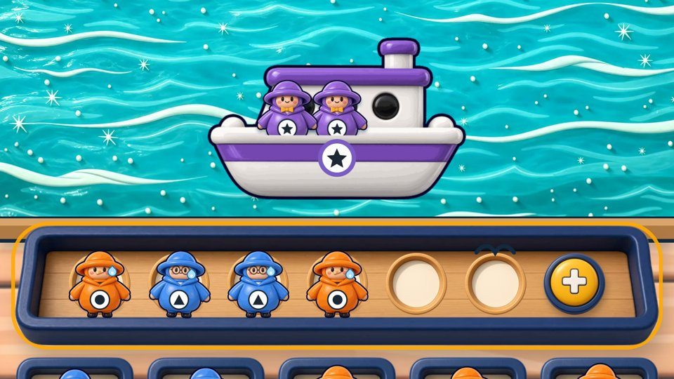
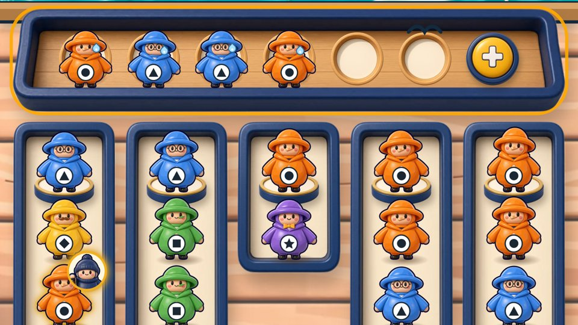
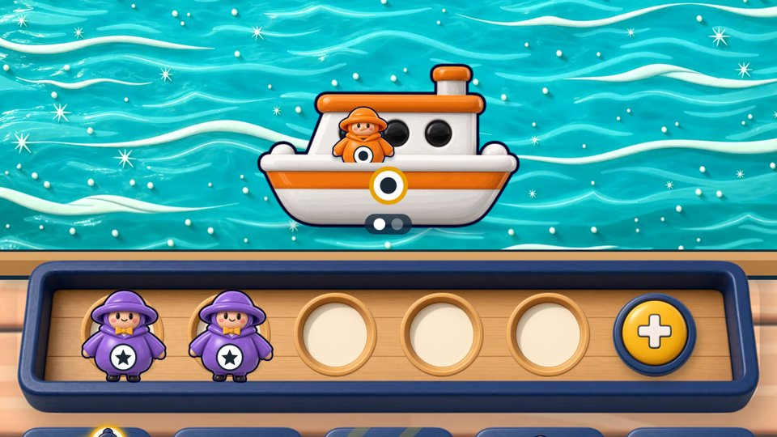
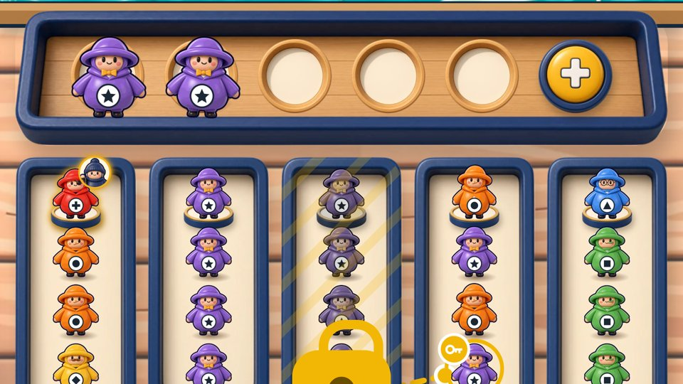
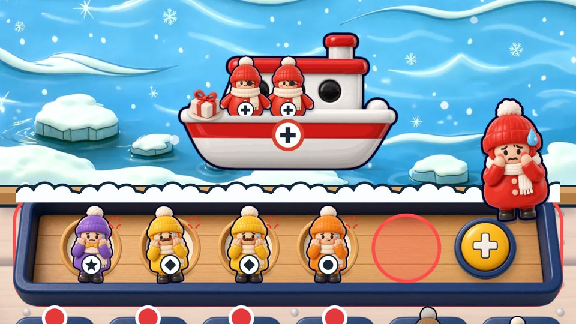
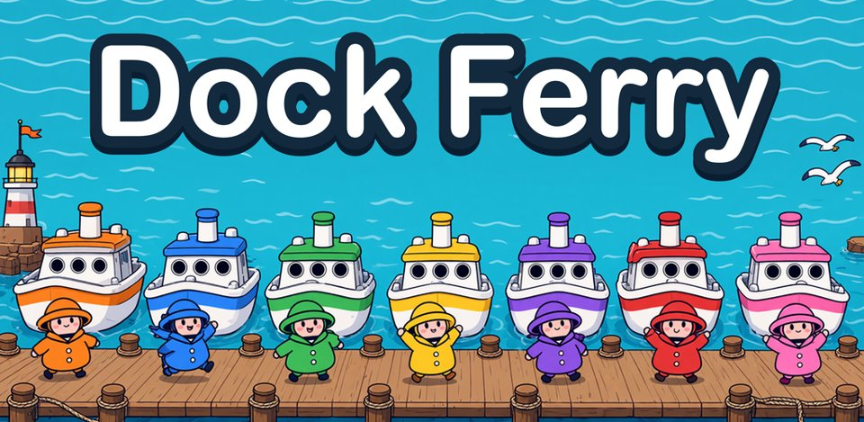

Dock Ferry: Color Sort Puzzle
Press kit · Little Tide Games
Download all assets (ZIP, 25 MB)Gameplay clip (MP4)
Dock Ferry is a cozy color sort puzzle where you tap riders onto the boat of their color, with only five bench seats to spare.
Tap the rider at the front of a line and they hop onto the boat of the same color. Wrong color? They sit on a bench with only five seats, so every tap is a small plan. Fill a boat and it sets sail; the next one pulls in.
Every level adds sea weather such as Golden Boats, Fish Schools, Tailwind or Fog, so the same rules never feel the same twice. Lose a level and you retry a fresh layout instead of replaying the exact same board. Between levels you decorate harbors and collect a sticker album of harbor guests, and seasonal harbors arrive through the year, starting with Winter Harbor on November 20.
Click for a larger preview. Full-resolution PNGs (1080x1920) are in the ZIP.






Little Tide Games is a one-person studio in Seoul making small, friendly puzzle games. Dock Ferry is its first game.
Wooseok Lee · woosuk547@gmail.com · TestFlight builds and review codes are available on request.